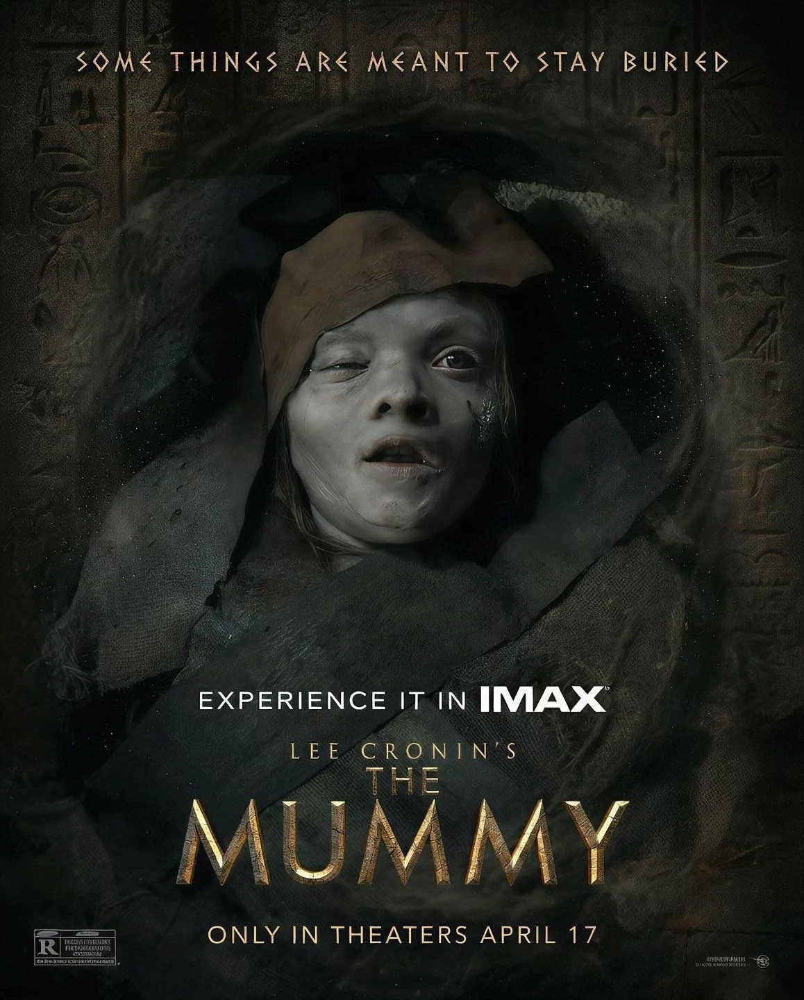
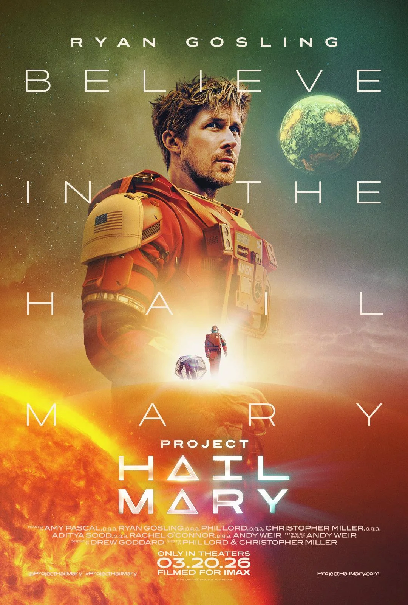
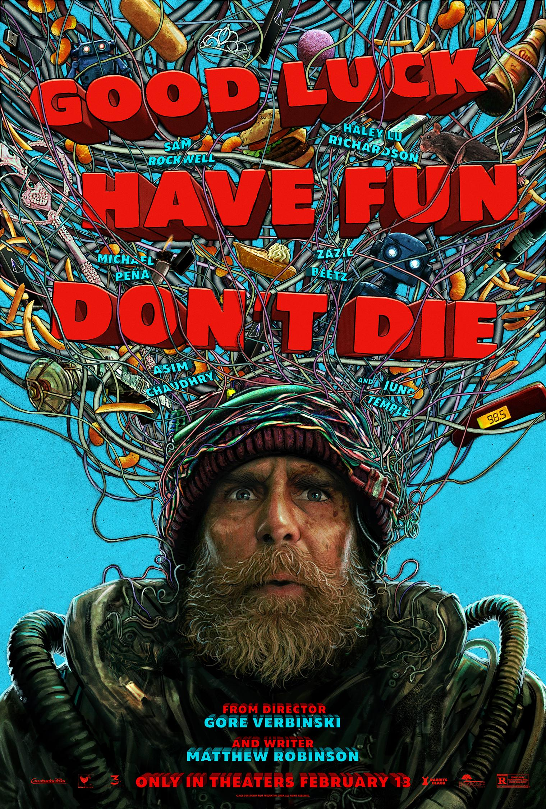
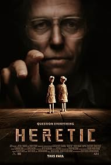
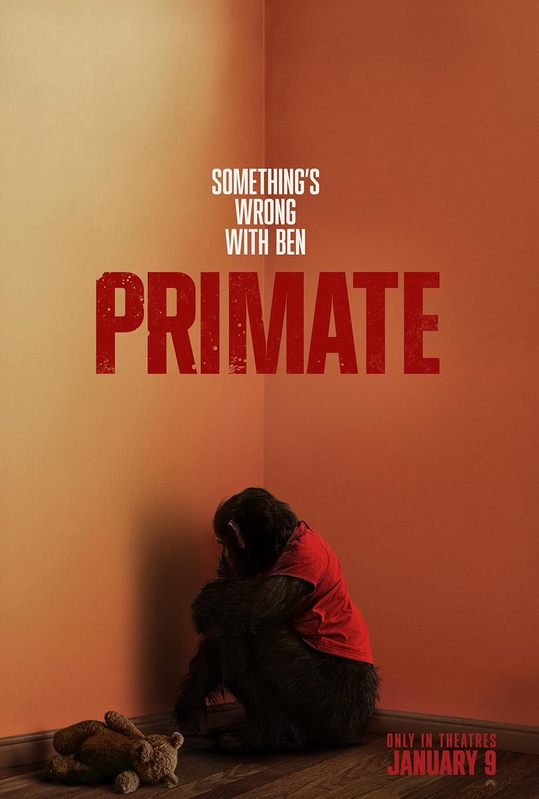

Daniel's Reviews
The Super Mario Galaxy Movie (2026)
This movie was a fun ride—just like the first one.
Read full review →
Project Hail Mary (2026)
A strong adaptation that captures the heart of the story, balancing science, emotion, and one of the best on-screen partnerships in recent sci-fi.
Read full review →
Good Luck, Have Fun, Don’t Die (2026)
A philosophical sci-fi story about humanity and technology that lingers long after the credits roll and leaves you questioning whose reality you were really watching.
Read full review →.jpg)
GOAT (2026)
A fun, action packed animated sports story with more heart than expected, built around dreams, teamwork, and finding your passion again.
Read full review →Send Help (2026)
A tense horror-comedy that flips survival into psychological warfare, blending dark humor with a power-shift battle between two very twisted people.
Read full review →
Heretic (2024)
Heretic was a tense-filled ride that keeps you questioning not only what is happening in the film, but your own religious views.
Read full review →.jpg)
Godzilla (1954)
Visually, this film is outstanding. Godzilla (1954) uses black-and-white imagery, practical effects, and restrained performances to explore responsibility, tradition, and the lasting consequences of war, giving the monster real weight beyond simple destruction.
Read full review →.jpg)
Wicked: For Good (2025)
A visually strong continuation that explores the divide between Elphaba and Glinda, delivering bold colors, big performances, and emotional ideas — even if pacing issues keep it from fully sticking the landing.
Read full review →.jpg)
28 Years Later: Bone Temple (2026)
This entry finally understands what it wants to be. Cleaner sound, steadier camera work, and a far more controlled approach let the film dig deep into psychological suffering, warped belief, and survival without gimmicks. Brutal, confident, and made for the big screen.
Read full review →
Primate (2025)
Primate wastes no time pulling you in, building grounded fear around a real-world threat that feels disturbingly believable. Practical effects, restrained escalation, and intense tension make it one of the most effective horror films of the year.
Read full review →.jpg)
Good Fortune (2025)
Marketed as a comedy, but it plays more like a modern drama about stress, money, and feeling unseen. The jokes didn’t land for me, but the message did — especially through Keanu Reeves’ Gabriel.
Read full review →.jpg)
Wicked (2024)
Wicked surprised me more than I expected. It’s too damn long and leans hard on CGI and drama, but buried inside all of that is a genuinely entertaining story with strong performances, catchy music, and a duo that works better than it has any right to.
Read full review →.jpg)
Superman (2025)
A grounded, visually strong take on Superman that skips the origin and focuses on moral balance, leadership, and consequence.
Read full review →
Shin Godzilla (2016)
A Godzilla movie that leans political and tactical instead of nonstop destruction. Strong themes and tension, even if the debates drag and the CGI reliance holds it back.
Read full review →.jpg)
28 Years Later (2025)
A fast, bloody ride with some impressive camera ambition—held back by rushed pacing, harsh color, and sound choices that pull you out at the worst times.
Read full review →